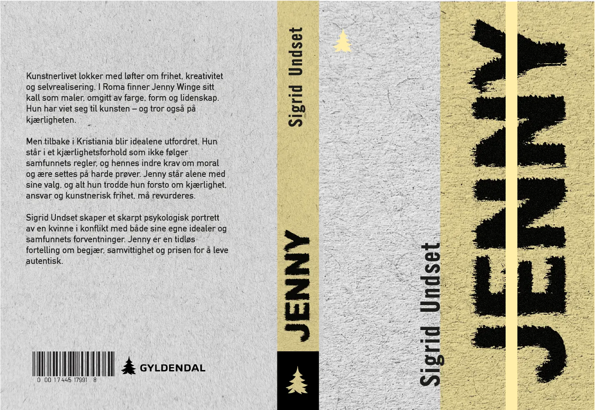
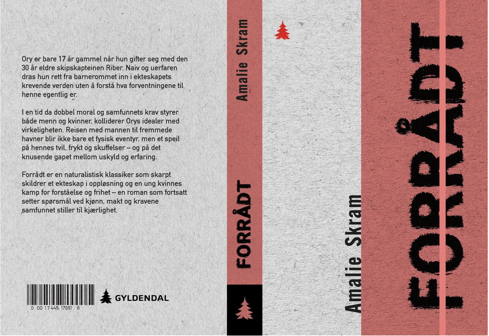
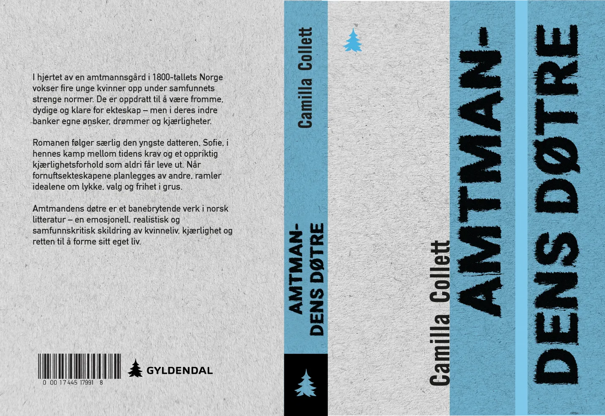
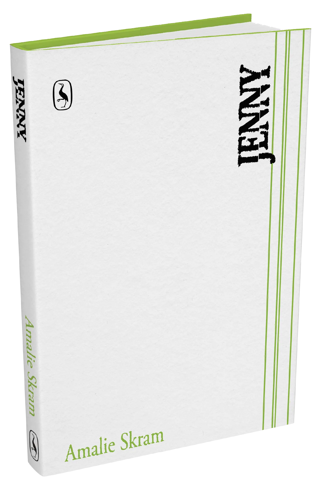
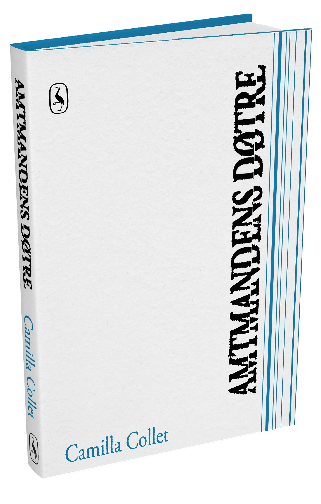
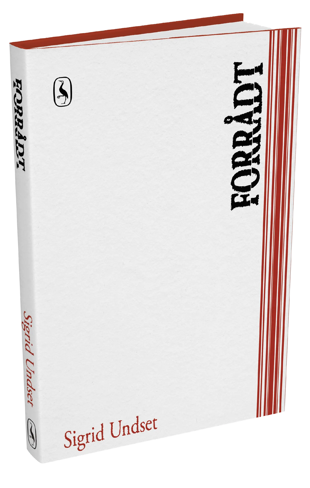
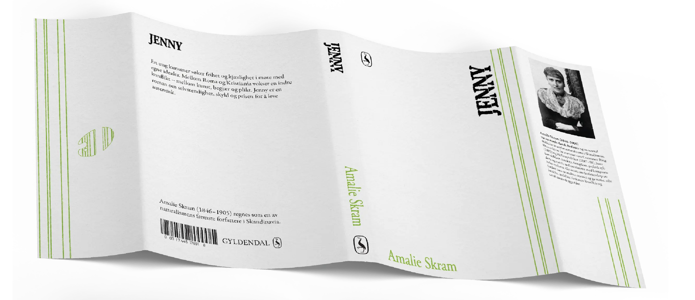
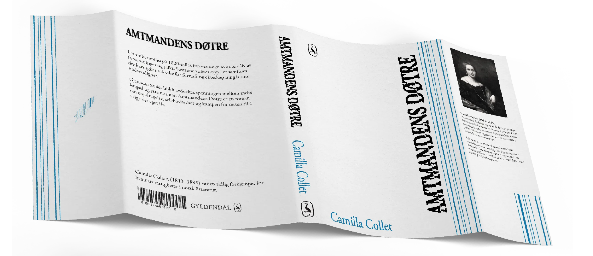
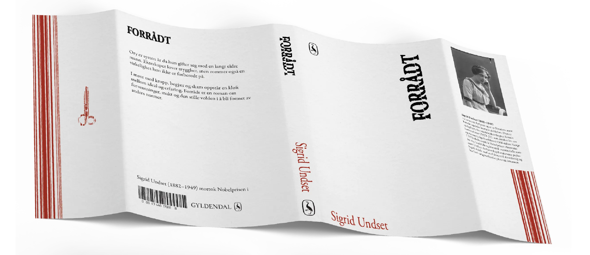

En redesign
av norske
klassikere
PROSESS
Prosessfaser
Første utkast
Fra grafisk smussomslag til taktil bokserie
I den første versjonen hadde bokserien et tydelig seriepreg, men Amtmandens Døtre ble en utfordring fordi tittelen var lengre enn de andre. Den måtte settes mindre og deles opp, noe som ga den en annen visuell tyngde enn Forrådt og Jenny.
Forenkling av serieuttrykket
Etter veiledning så jeg at jeg forsøkte å gi hver bok for mye eget særpreg gjennom farger og typografiske grep. Jeg ønsket derfor å forenkle uttrykket, slik at serien som helhet stod sterkere, mens forskjellene mellom bøkene ble mer subtile.
Typografisk videreutvikling
I den første versjonen brukte jeg Roboto, DIN og Alternate Gothic. Etter veiledning så jeg at disse skriftvalgene ikke passet godt nok til klassiske skjønnlitterære bøker. Roboto ga et for digitalt og funksjonelt preg, mens DIN og Alternate Gothic ga assosiasjoner til skilt og informasjonsdesign.
Siden DIN og Alternate Gothic også lignet mye på hverandre, ble typografisystemet mer komplisert enn nødvendig. I videreutviklingen gikk jeg derfor over til en mer klassisk serif, som ga serien et roligere, mer litterært og tidløst uttrykk.



Andre utkast
Symboler og forenkling
I den første løsningen arbeidet jeg med små symboler knyttet til hver bok: en saks for Forrådt, en fjærpenn for Amtmandens Døtre og en palett for Jenny. Symbolene skulle i utgangspunktet tydeliggjøre tematikken i bøkene, men etter hvert opplevde jeg at de gjorde uttrykket for illustrativt og mindre modent. De ble litt for direkte i formen, og tok bort noe av roen og tyngden jeg ønsket at bokserien skulle ha.
Jeg valgte derfor å gå bort fra symbolene og heller la farge, tekstil, preging og typografi bære identiteten. Dette ga serien et mer nedtonet og profesjonelt uttrykk, samtidig som det åpnet for en mer subtil tolkning av bøkene.
Typografiske brudd
I den første versjonen eksperimenterte jeg også med avbrudd og «hakk» i typografien. Tanken var å speile brudd, press og spenning i romanenes tematikk. I videreutviklingen så jeg likevel at dette grepet ble for uklart: Det fremstod verken tydelig nok som et konseptuelt valg, eller rent nok som typografi. Dersom avbruddet skulle fungert, måtte det enten vært gjort mer konsekvent og markant, eller fjernet helt.






Løsning
Etter flere runder med utprøving ønsket jeg å samle bokserien i et roligere og mer helhetlig uttrykk. De tidligere versjonene hadde flere visuelle virkemidler, som smussomslag, symboler, linjer og moderne typografi. I den endelige løsningen valgte jeg derfor å redusere uttrykket og heller la materialitet, fargefelt og preging bære identiteten.
Hardcover med tekstilbind ga serien et mer taktilt og tidløst preg. Det horisontale fargefeltet fungerer som et felles system, mens fargevalgene skiller bøkene fra hverandre på en mer subtil måte. Typografien ble også endret til en klassisk serif og bearbeidet for å fungere bedre med preging i tekstil.
Resultatet er en mer nedtonet og samlet bokserie, der uttrykket oppleves mer modent, litterært og materialbasert.